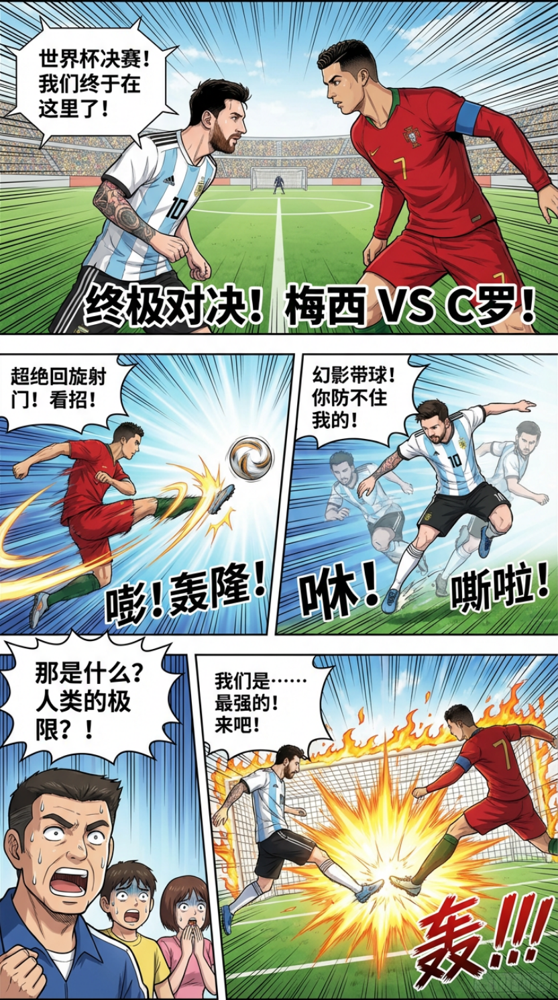
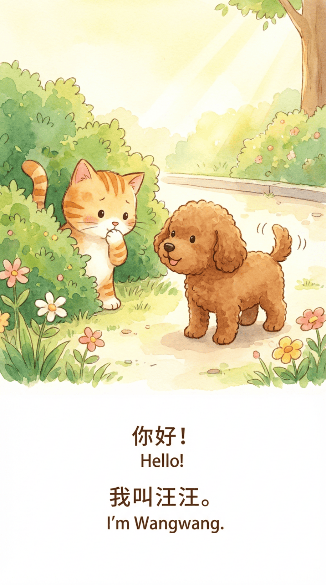
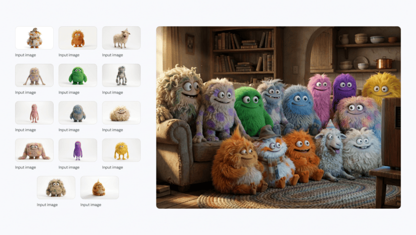
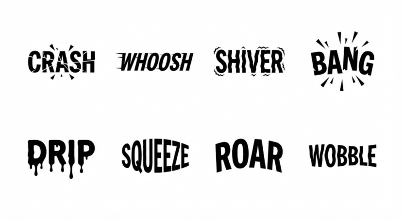
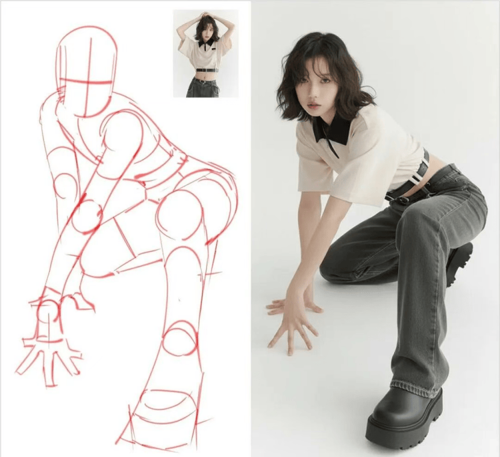

Banana Pro 全网最全玩法攻略
模型介绍
Nano-banana无论是换背景、改风格、调表情，还是更复杂的动作、服装、物体处理，几乎都能做到自然流畅、不留痕迹。不仅适合设计师，它对于电商卖家、自媒体创作者，甚至个人创作来说都是利器。
国内可用平台：果捷AI
提示词的黄金法则
Nano Banana 是一个“思考”模型，它不只是进行关键词匹配，还能理解意图、物理原理和构图。
这就意味着，如果要获得最佳的效果，不要使用传统的“标签堆砌”方式，而是要像一个创意总监一样思考和行动。
编辑，而不是重新生成
Nano Banana Pro 模型非常擅长对话式编辑，如果一个图像已经正确了 80%，那就不要再从头开始生成了，你只需要提出具体的变更就可以了。
使用自然语言和完整句子
与模型交流时，要像指导一位艺术家创作一样。使用正确的语法和描述性的形容词。
❌ 错误示范：“酷炫汽车，霓虹灯，城市，夜晚，8K”
✅ 正确示范：“一个电影风格的广角镜头，展现一辆未来主义跑车在雨夜的东京街道上飞驰。霓虹灯标志在湿漉漉的路面和跑车的金属车身上反射出光彩”
要具体和清晰的描述
模糊的提示词只会产生普通的结果，要定义主题、环境、光线和氛围。
❌ 描述主题：“一个女人”
✅ 描述主题：“一位穿着香奈儿复古套装的高雅老妇人”
✅ 描述质感： 描述纹理，比如“哑光表面”、“磨砂钢”、“柔软天鹅绒”、“皱巴巴的纸张”
提供上下文（为什么/ 为了谁）
Nano Banana Pro 是一个“思考”模型，给它上下文有助于它做出合理的艺术决策。
Nano Banana Pro 玩法汇总
漫画翻译上色一条龙
提示词：
给这个黑白漫画上色，并将台词翻译成中文
复制
模仿手写字迹完成图中数学题
提示词：
完成图中数学题，并在题目中做出辅助线
复制
生成论文Overview 图
提示词：
根据以下论文内容，生成一篇高质量的顶会风格的overview图，展示整个的工作流程
复制
万物皆可手账
提示词：
用中文手账形式展示在广州旅游的2 天行程安排，比例9:16
复制
以手账形式生成一张自媒体写作入门流程的知识卡片，中文
一键渲染
提示词：
这是一张建筑平面设计图，请将其转化为3D模型
复制
将草图转化为实拍产品
小红书封面
提示词：
生成居家健身减肥主题的爆款小红书笔记封面，尺寸3:4，内容："28天瘦了12斤，无器械居家燃脂操，躺瘦体质就是这么练出来的！" 生成考研备考经验主题的小红书笔记封面，尺寸3:4，内容："二战上岸985，我的考研逆袭笔记！从300分到400+的高效学习法大公开"
复制
海报设计/翻译一条龙
提示词：
给瑞幸咖啡做一个圣诞节主题的中文活动海报 把这张海报翻译成英文版
复制
将三个黄色和蓝色罐子上的所有英文文本翻译成韩语，同时保持其他内容不变。
课件好帮手
提示词：
参考中国语文课本，为古诗《静夜思》生成一页课文，诗、拼音、注释一应俱全。
复制
请给桃花源记配一幅古画，并在顶部附带原文
生成平抛运动轨迹与速度位移分解示意图
一个三棱镜被分解成彩色光，又通过第二个三棱镜重新组合成白光的过程
动漫生成：
提示词：
生成像《足球小将》那种专业分镜结构、漫画叙事节奏、对白气泡、拟声词、画格布局、视角变化、动态镜头，但主角换成梅西和C罗在世界杯决赛巅峰对决的故事，中文对白。
复制

请创作一个儿童图画故事封面，主角是一只小猫和一只小狗成为朋友的过程。配中英文简短对话，用不同角度展示两个主角，确保它们在每页中外观保持一致，画风温暖可爱，适合3岁孩子。

你现在需要进行小说配图素材制作，小说片段是：林薇僵住了。手电筒从手中滑落,在地面上打着旋,光束疯狂地扫过四周——锈蚀的水管、布满蛛网的天花板、角落里堆放的旧家具,最后停在了楼梯口。那里站着一个人影。一个湿透的人影,正一滴一滴地往下滴水
多图融合

字体与创意样式
提示词：
制作8个极简风格的标志，每个标志是一个富有表现力的单词，通过字母的视觉设计来传达信息或声音，以富有戏剧性的方式表现该单词的含义。构图：所有标志采用黑色扁平矢量风格，呈现在同一个白色背景上。
复制

一句话拯救废片
模仿妆容
提示词：
为图一人物化上图二的妆，还保持图一的姿势。其余场景保持不变。
复制
效果演示
人像美化
提示词：
对照片中的人物进行自然美化处理：皮肤白皙细腻，无瑕疵，脸型微微瘦削但不过分，五官立体，眼睛明亮有神，嘴唇饱满自然，整体效果自然美观，不失真实感。
复制
效果演示
去掉脸上的痘痘
效果演示
去掉眼镜
效果演示
笑起来
效果演示
睁开眼睛
效果演示
换个显高的角度
效果展示
不会摆Pose？那就换姿势
效果展示：
将照片中情侣姿势改为牵手一起走动，两人微笑，身体稍微前倾动作自然流畅，背景保持不变。
专业摄影照片
一寸证件照
提示词：
请参考图1中的人物面部特征，并使用图2作为5:7纯白背景的比例参考，为我制作一张专业的证件照。请将照片中的姿态调整为正面朝向镜头，换上深色西装和白衬衫，并保持自然微笑。最终成片需要达到专业影棚的拍摄水准，具有佳能5D相机（Canon 5D）拍摄的高清质感。
复制
效果演示
职业照
提示词：
让图一的人参考图二的模特姿势生成全身的职业形象照。
复制
效果展示
九宫格证件照
提示词：
为图中人物设计9 种风格差异显著且符合性别的发型（涵盖不同风格如日式和韩式等），清晰呈现人物搭配每种发型的面部及头部特写（突出发型与脸型的适配效果），所有特写镜头需保持一致的拍摄角度、光线和背景风格，最终整合为一张布局规整的九宫格图片，高清晰度，细节分明。
复制
效果展示：
老照片修复
老照片修复上色
提示词：
修复这张老图片并上色，清除所有划痕、瑕疵、褪色、霉斑，还原清晰五官和更多细节。无过度锐化，画面干净自然。
复制
效果演示：
黑白图片上色
提示词：
黑白照片专业上色，色彩遵循现实逻辑（如皮肤为自然暖米色、黑发偏深棕、白色衣物带轻微米白调），避免过饱和与色彩溢出；保留黑白照片的细腻质感，不破坏原有光影层次（阴影处色彩偏暗但不浑浊，高光处柔和不刺眼）；整体色调协调统一，呈现“自然不刻意” 的上色效果，仿佛原图即为彩色胶片拍摄。
复制
效果演示：
卡通场景
制作表情包
提示词：
根据图片1制作九宫格表情包，有开心、悲伤、流泪、发火、恼怒、害羞等九个不一样的表情。
复制
效果演示：
IP形象制作
提示词：
基于提供的IP 形象，设计 9 种风格各异的姿势，涵盖站立、坐姿、动态动作（如跳跃、挥手）、静态姿态（如托腮、叉腰）等不同类型，每种姿势需贴合该 IP 的核心特征与性格特质，清晰呈现 IP 在各姿势下的整体形态与细节，最终输出包含9个姿势的九宫格图片。
复制
效果演示：
风格化插画和贴纸
提示词：
生成一张卡哇伊风格的贴纸，画的是一只快乐的小熊猫，戴着一顶小小的竹帽，正在咀嚼一片绿色的竹叶。设计采用粗大、清晰的轮廓线，赛璐璐风格的简单着色，以及鲜艳的调色板。背景必须为白色
复制
效果演示
可爱温馨针织玩偶
提示词：
一张特写、构图专业的照片，展示一个手工钩织的毛线玩偶被双手轻柔地托着。玩偶造型圆润，生成【图片1】人物的可爱Q版形象，色彩对比鲜明，细节丰富。持玩偶的双手自然、温柔，手指姿态清晰可见，皮肤质感与光影过渡自然，展现出温暖且真实的触感。背景轻微虚化，表现为室内环境，有温暖的木质桌面和从窗户洒入的自然光，营造出舒适、亲密的氛围。整体画面传达出精湛的工艺感与被珍视的温馨情绪。
复制
8位像素图标
提示词：
参考图片1创建一个极简主义的 8 位像素风格的标志，居中放置在纯白背景上。使用有限的复古调色板，搭配像素化细节、锐利边缘和干净的块状形态。标志应简洁、具有标志性，并能在像素艺术风格中清晰识别——灵感来自经典街机游戏美学。
复制
线稿上色
提示词：
这张照片是一个IP形象。请保持原图纸的轮廓一致，并给这张图纸上色。配色要求高质量，具有自然、有质感的效果，整体画面色彩丰富、风格多样的效果。
复制
效果展示
电商场景
3D产品剖面图
提示词：
Ultra-detailed exploded view of a product, metallic parts and electronic components floating in mid-air, perfectly aligned, revealing inner structure, futuristic technology aesthetic, 8K resolution, soft cinematic lighting, highly realistic.
复制
效果演示
识别拆分衣物
提示词：
在一张平铺照片上，展示图中涉及的所有服装单品
复制
专业产品拍摄
A photorealistic [视角] of [主体], [动作或表情], set in [环境]. The scene is illuminated by [光线描述], creating a [氛围] atmosphere. Captured with a [拍摄焦段], emphasizing [关键纹理和细节]. The image should be in a [画幅比例] format.
簇绒地毯
提示词：
创建一张图像，展示一个彩色、手工簇绒的地毯，形状为[图片1] ，铺设在一个简约的地板背景上。地毯设计大胆、俏皮，具有柔软蓬松的质感和粗线条的细节。从上方俯拍，使用自然光照，整体风格略带古怪的 DIY 美感。色彩鲜艳，轮廓卡通化，材质具触感且温馨舒适——类似于手工簇绒艺术地毯。
复制
效果演示：
多海报参考融合
提示词：
图一的女孩拿着图二的面霜，往脸上涂抹，帮我融合成一张海报。
复制
效果展示：
产品设计
提示词：
把图一贴在图二易拉罐上，并放在极简设计的布景中，专业摄影。
复制
效果展示：
虚拟试衣
提示词：
让图片1中的人穿上图中所有的服装（包括上衣、下装、外套等），并搭配图中所有的配饰（如帽子、围巾、首饰、包包、鞋子等），确保所有服饰和配饰都完整穿戴在人物身上，整体搭配自然协调，呈现出完整的造型效果，细节清晰。
复制
效果展示：
地表最强P图
添加和移除元素
提示词：
基于我提供的图片，请[添加/移除/修改] 场景中的 [元素]。确保调整后的效果符合我的融合要求。
复制
效果演示：
人物合影
去除水印
提示词：
请去除图片中所有水印内容，且修复水印区域下面的背景，使其与周围环境自然融合，不留任何水印痕迹，整体画面干净整洁。
复制
效果演示：
标注生成
火柴人/线稿变换姿势
让图1和图2的两个人以图3中的姿势激烈战斗，加入丰富的视觉背景和环境细节，强调场景中的互动与紧张氛围
保留图片1中人物的原始风格，但摆出图片2中的姿势，姿势完全一样

封面还原
提示词：
使用现代字体和真实风格为这张手绘图像创建YouTube 缩略图
复制
现实世界的推理
Gemini 2.5 Flash 它不只是单纯地“画画”，而是可以“理解”这个世界了。 可以推断出图像中显示的时刻之前或之后发生的事情。 比如，下面这张“玻璃瓶从桌上掉向地面”的图。 然后，你问它：“想象一下接下来会发生什么给我生成接下来的画面”它竟然能准确预判出“瓶子会摔碎”，并生成了破碎的瞬间！
时间理解
效果展示：
生成这张图片十年后场景的图片
效果展示：
机位/视角变化
提示词：
从鸟瞰视角生成这张图片 从背后视角生成这张图片 从侧面视角生成这张图片 从特写视角生成这张图片
复制
效果演示：
食材原料展示
提示词：
食材平铺拍摄，将成品菜肴所用的原材料整齐地摆放在干净的厨房或木质背景上，食材新鲜且未经加工，配料被放在碗和盘子里，佐料瓶也陈列其中，呈现优雅的静物美食摄影风格，从正上方或主视角拍摄，采用明亮的自然光。
复制
建筑设计
更改墙面颜色
效果展示：
家具融合打造新家
提示词：
结合图片中的软装元素（包括家具、布艺、装饰摆件等），将其合理搭配组合，生成一个风格统一、布局协调的完整空间效果。需体现各软装元素的色彩呼应、材质搭配及整体氛围，呈现出自然融合的室内场景，高还原度，细节清晰。
复制
效果展示：
此时你还可以变换视角，如：从鸟瞰视角生成这张图片
生活创意
生成手办
提示词：
Create a 1/7 scale commercialized figurine of the characters in the picture, in a realistic style, in a real environment. The figurine is placed on a computer desk. The figurine has a round transparent acrylic base, with no text on the base. The content on the computer screen is a 3D modeling process of this figurine. Next to the computer screen is a toy packaging box, designed in a style reminiscent of high-quality collectible figures, printed with original artwork. The packaging features two-dimensional flat illustrations.
复制
效果演示：
定制Q版钥匙串
提示词：
一张特写照片，展示一个被人手握住的可爱多彩钥匙串。钥匙串的造型为[图片1] 的 Q 版风格。钥匙串由柔软橡胶材质制成，带有粗黑描边，连接在一个小巧的银色钥匙圈上，背景为中性色调。
复制
效果演示：
真人仿Cosplay（需要抽卡）
提示词：
让图一的人物cosplay图二的角色，服饰、妆容、道具和图二一致
复制
效果演示：
展示不同年代的你
提示词：
生成宝丽来风格的照片，并以20世纪80年代和90年代标志性风格呈现
复制
效果演示：
和巨星同场竞技
博物馆拍摄自画像
提示词：
在博物馆里自拍一张照片，背景是一件艺术品，其内容是根据图片绘制的素描头像。前景类似于上传的图片，男子正拿着手机自拍，拍摄角度不要挡住后面的艺术品。
复制
效果演示
绘画过程图
提示词：
为这张图绘制如下场景，一个画师正在一个粗犷，略显凌乱的画室画一张人物速写，画板右上角夹着如图所示的照片，画板上正在绘制这张图的速写，第一人称视角，看到手臂和铅笔。分别生成三张图，每张图位置略有区别，画像内容逐渐丰富，类似绘画创作的过程图。
复制
效果演示
手绘转三维模型
提示词：
将这张手绘稿，转成一个轴测图视角的三维实体模型，直接根据这张图片为我生成一个轴测图视角的三维渲染模型。
复制
效果展示：
三维模型乐高化
提示词：
基于图1，将其转变为乐高玩具模型，真实的放在桌子上，桌子边上有乐高玩具的盒子与说明书。这个建筑正在安装过程中，有一半的模型还没有拼装好，零件散乱的放置在桌子上
复制
效果展示：
地图建模
生成等距模型
乐高城市景观
提示词：
创建一幅高度精细且色彩鲜艳的乐高版【上海外滩】景象。前景呈现经典的【外滩历史建筑群】，用乐高砖块精致还原西式与新古典主义风格的建筑立面，包括钟楼、穹顶、柱廊等细节。乐高小人们正在沿江漫步、拍照、观光，街道两旁停靠着经典样式的乐高汽车。背景是【壮观的黄浦江】，以蓝色半透明乐高砖拼接，【江面上有乐高渡轮和游览船。对岸的浦东陆家嘴高楼林立，包括东方明珠塔、上海中心、金茂大厦和环球金融中心】，这些超现代乐高摩天大楼色彩丰富、造型逼真。天空为乐高明亮蓝色，点缀少量白色乐高积木云朵，整体呈现充满活力与现代感的视觉效果。
复制
效果展示
由地图截图生成建模
提示词：
请以尽可能接近真实照片的方式，展示我当前位置向东的景色。请使其看起来像是从该位置拍摄的，并忠实地展现建筑物和其他细节。
复制
效果展示
一些小Tips - 稀有同学
如何提高出好图的概率？
提示词：
若要提高抽出好卡的概率，除了提示词要准确外，还要确保原图中的背景简单，最好为纯色，其次是图中的主体数量建议不要超过3个，单个主体是最佳的。 尤其是使用Nano Banana将照片转为手办照片时，尽量使用主体单一，背景简单，且主体至少有大半个身子，这样最终抽出的结果往往是令人满意的，如下图所示，我还对其分辨率进行了增强。
复制